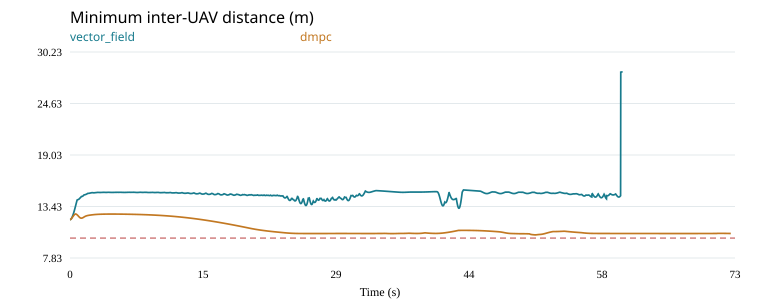
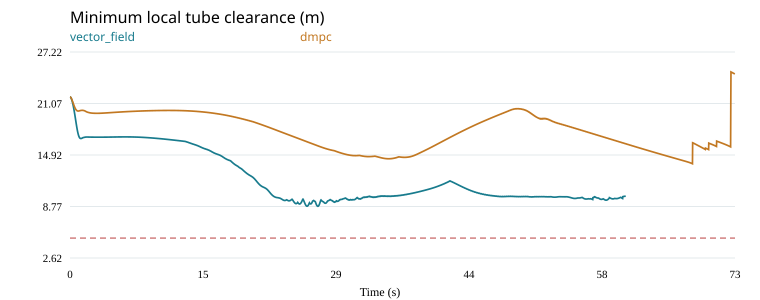
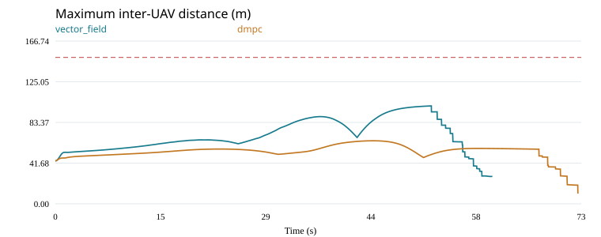
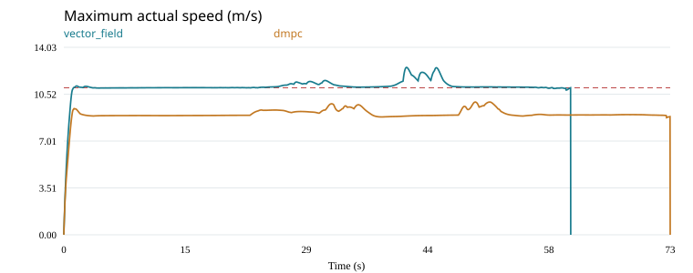
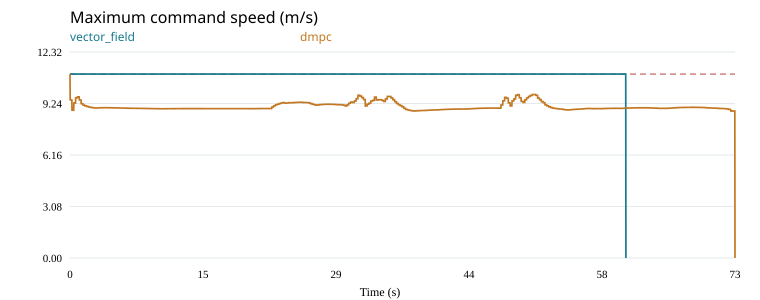
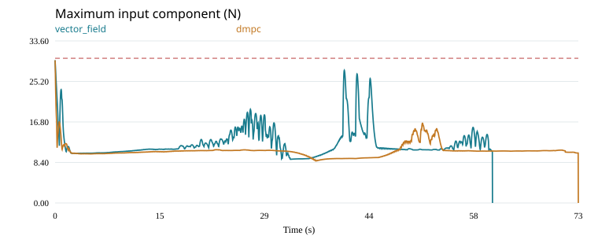

Chỉ thay outer loop. Cùng tube, toàn bộ initial state, inner loop, plant, nhiễu và ngưỡng đánh giá. DMPC cập nhật 0.2 s; vector field cập nhật 0.02 s. Đây là phiên bản DMPC riêng của benchmark, không tái hiện nguyên bản một công trình khác.
Mở môi trường và tube trong trình xem 3D
Các giá trị dưới đây được đọc từ snapshot đi kèm lần chạy, không lấy từ file cấu hình đang chỉnh sửa. Tọa độ theo hệ X/Y/Z, đơn vị mét.
| Biến / thông số | Giá trị | Đơn vị | Ý nghĩa | Nguồn |
|---|---|---|---|---|
| Kích thước world | (500, 500, 300) | m | X × Y × Z; Z hướng lên | Theo paper trong cấu hình lưu |
| Giới hạn world | ((0, 0, 0), (500, 500, 300)) | m | Góc nhỏ nhất và lớn nhất; biên world được coi là vật cản | Thiết lập benchmark |
| p_start | (50, 140, 50) | m | Gốc đường tâm; UAV khởi tạo ở các tiết diện phía trong tube, theo chiều tiến về đích | Theo paper trong cấu hình lưu |
| p_goal | (460, 390, 170) | m | Điểm cuối đường tâm; đích nhiệm vụ là đĩa tiết diện cuối | Theo paper trong cấu hình lưu |
| N | 27 | UAV | Lấy từ toàn bộ initial states đã lưu | Dữ liệu lần chạy |
| Seed | 17 | — | Seed lập kế hoạch; tube đã cố định trong phép so sánh | Thiết lập benchmark |
Tọa độ và kích thước vật cản là benchmark tự dựng, không phải dữ liệu tác giả công bố trong Hình 7. Các giá trị trong bảng đều tính bằng mét.
| ID | Loại | Góc min / tâm | Góc max | Bán kính | Kích thước hộp |
|---|---|---|---|---|---|
| block_a | Hộp | (120, 320, 0) | (200, 420, 220) | — | (80, 100, 220) |
| block_b | Hộp | (200, 70, 0) | (310, 190, 210) | — | (110, 120, 210) |
| block_c | Hộp | (330, 350, 0) | (400, 440, 250) | — | (70, 90, 250) |
| sphere_a | Cầu | (90, 420, 140) | — | 35 | — |
| sphere_b | Cầu | (410, 110, 170) | — | 45 | — |
| Thông số | Giá trị | Đơn vị | Ý nghĩa |
|---|---|---|---|
| Chiều dài đường tâm | 639.195 | m | Tube thực tế được dùng trong lần chạy |
| Bán kính nhỏ nhất / lớn nhất | (28.8425, 42.6502) | m | Tính từ radii đã xuất, không dùng giới hạn thiết kế thay cho giá trị thật |
| Bán kính thiết kế tối đa | 45 | m | Giới hạn khi lập tube |
| Số mẫu đường tâm | 444 | điểm | Số điểm trong tube đã đóng băng |
| Khoảng hở tube–vật cản/world được chứng nhận | 2 | m | Khoảng hở của thể tích bao tube; khác khoảng hở UAV–biên tube |
Biên tube trong các metrics là khoảng hở hướng kính cục bộ, chưa phải khoảng cách Euclidean chính xác đến toàn bộ bề mặt cong.
| Biến | Giá trị | Đơn vị | Ý nghĩa | Nguồn |
|---|---|---|---|---|
| v_max | 11 | m/s | Ngưỡng tốc độ thực để chấm điểm và giới hạn lệnh chung | Theo paper trong cấu hình lưu |
| r_s | 5 | m | Bán kính an toàn UAV | Theo paper trong cấu hình lưu |
| r_a | 10 | m | Bán kính vùng tránh va chạm của vector field | Theo paper trong cấu hình lưu |
| l_s | 100 | m | Ngưỡng bắt đầu hút đàn trong vector field | Theo paper trong cấu hình lưu |
| l_m | 150 | m | Khoảng cách cặp lớn nhất được chấp nhận | Theo paper trong cấu hình lưu |
| d_min = 2 r_s | 10 | m | Khoảng cách cặp UAV nhỏ nhất khi chấm điểm | Suy ra từ r_s |
| Thông số | Giá trị | Đơn vị | Ý nghĩa |
|---|---|---|---|
| Bố trí khởi tạo | (16, 30, 44) | m dọc đường tâm | Các tiết diện đặt UAV ban đầu |
| Khoảng cách lưới | 12 | m | Mỗi tiết diện dùng lưới 3 × 3 trong cấu hình hiện tại |
| Tốc độ khởi tạo cấu hình | 0 | m/s | Bảng dưới là vận tốc thực đã lưu; không suy ra trạng thái bộ lọc từ giá trị này |
| dt plant / inner | 0.02 | s | Bước tích phân của cùng plant và inner loop |
| Thời gian mô phỏng tối đa | 100 | s | Giới hạn thời gian nhiệm vụ |
| Khoảng ghi frame | 0.2 | s | Replay ghi thưa hơn metrics; metrics được đo mỗi dt |
ID bắt đầu từ 0. v(0) là vận tốc thực; ζ(0) là trạng thái bộ lọc lệnh của inner loop, có thể khác 0 dù UAV đứng yên. Các trạng thái thích nghi còn lại được giữ trong initial_state.json.
| ID | p(0) — m | v(0) — m/s | ζ(0) — m/s |
|---|---|---|---|
| 0 | (57.6014, 158.882, 61.0751) | (-0, 0, 0) | (-1.10999, 8.13762, 7.31759) |
| 1 | (57.1685, 158.61, 49.086) | (-0, 0, -0) | (-1.09929, 10.9422, -0.243643) |
| 2 | (56.7356, 158.337, 37.0969) | (-0, 0, -0) | (-0.566181, 8.13507, -7.38242) |
| 3 | (63.9878, 148.722, 61.0751) | (0, 0, 0) | (4.08709, 2.55481, 9.8878) |
| 4 | (63.5549, 148.45, 49.086) | (0, 0, -0) | (6.11173, 3.82761, -0.353831) |
| 5 | (63.122, 148.178, 37.0969) | (0, 0, -0) | (4.43649, 2.78236, -9.67347) |
| 6 | (70.3741, 138.563, 61.0751) | (0, -0, 0) | (7.07805, -4.31535, 7.23043) |
| 7 | (69.9412, 138.291, 49.086) | (0, -0, -0) | (9.57087, -5.41614, -0.252627) |
| 8 | (69.5083, 138.019, 37.0969) | (0, -0, -0) | (7.26155, -3.84561, -7.31308) |
| 9 | (69.1322, 166.185, 60.6581) | (0, 0, 0) | (0.994341, 8.70301, 6.65349) |
| 10 | (68.9308, 166.056, 48.6605) | (0, 0, -0) | (1.12572, 10.9405, -0.194137) |
| 11 | (68.7295, 165.928, 36.6629) | (0, 0, -0) | (0.777201, 8.5193, -6.91502) |
| 12 | (75.5792, 156.064, 60.6581) | (0, 0, 0) | (5.93206, 3.75681, 8.46741) |
| 13 | (75.3778, 155.935, 48.6605) | (0, 0, -0) | (9.28634, 5.88819, -0.305006) |
| 14 | (75.1765, 155.807, 36.6629) | (0, 0, -0) | (5.60891, 3.56084, -8.76702) |
| 15 | (82.0262, 145.943, 60.6581) | (0, -0, 0) | (8.31163, -2.78855, 6.64385) |
| 16 | (81.8248, 145.814, 48.6605) | (0, -0, -0) | (10.3888, -3.61092, -0.184607) |
| 17 | (81.6235, 145.686, 36.6629) | (0, -0, -0) | (8.0586, -2.90224, -6.90188) |
| 18 | (80.6176, 173.555, 60.554) | (0, 0, 0) | (2.65425, 8.83698, 5.98855) |
| 19 | (80.6508, 173.576, 48.5541) | (0, 0, 0) | (2.76793, 10.6461, 0.00262356) |
| 20 | (80.684, 173.597, 36.5542) | (0, 0, -0) | (1.92778, 8.78547, -6.33239) |
| 21 | (87.1272, 163.474, 60.554) | (0, 0, 0) | (6.97349, 4.49417, 7.22308) |
| 22 | (87.1604, 163.495, 48.5541) | (0, 0, 0) | (9.24529, 5.96024, 0.00555114) |
| 23 | (87.1936, 163.517, 36.5542) | (0, 0, -0) | (6.49388, 4.18807, -7.82876) |
| 24 | (93.6368, 153.393, 60.554) | (0, -0, 0) | (9.05461, -1.4044, 6.0862) |
| 25 | (93.67, 153.414, 48.5541) | (0, -0, 0) | (10.7986, -2.09549, 0.00546447) |
| 26 | (93.7032, 153.436, 36.5542) | (0, -0, -0) | (8.69737, -2.03848, -6.41874) |
| Biến | Giá trị | Đơn vị | Ý nghĩa |
|---|---|---|---|
| m | 1 | kg | Khối lượng UAV |
| τ_x, τ_y, τ_z | (0.12, 0.12, 0.15) | kg/s | Hệ số drag tuyến tính |
| g | 9.81 | m/s² | Gia tốc trọng trường |
| u_max từng trục | (30, 30, 30) | N | Giới hạn component lực, không phải giới hạn norm tổng |
| Biên độ bất định | 0.15 | m/s² | Biên độ hàm bất định trong plant |
| Biên độ nhiễu | 0.25 | m/s² | Biên độ nhiễu sinus trong plant |
| Tên trong cấu hình | Giá trị | Ý nghĩa | Nguồn |
|---|---|---|---|
| P | (9.2, 9.2, 10.2) | Gain SPEM | Theo paper trong cấu hình lưu |
| C | (1.9, 1.9, 2) | Gain LDO | Theo paper trong cấu hình lưu |
| K | (1.4, 1.4, 1.5) | Gain bám vận tốc | Theo paper trong cấu hình lưu |
| gamma_a | 0.3 | Gain học actor | Theo paper trong cấu hình lưu |
| gamma_c | 0.3 | Gain học critic | Theo paper trong cấu hình lưu |
| eta1 | 1.1 | Leakage actor | Theo paper trong cấu hình lưu |
| eta2 | 1.1 | Leakage critic | Theo paper trong cấu hình lưu |
| filter_tau | 0.15 | Hằng số thời gian bộ lọc — s | Thiết lập benchmark |
| Ka | 2 | Gain hệ phụ bù bão hòa | Thiết lập benchmark |
| robust_smoothing | 0.5 | Tham số làm trơn robust term | Thiết lập benchmark |
| Q | 10 | Gain cập nhật thích nghi robust | Thiết lập benchmark |
| eta3 | 1 | Leakage robust gain | Thiết lập benchmark |
| rbf_width | 1.5 | Độ rộng RBF | Thiết lập benchmark |
| rbf_centers | (-1, 0, 1) | Tâm RBF trên đường chéo không gian đặc trưng | Thiết lập benchmark |
| feature_scales | (11, 11, 11, 11, 11, 11, 15, 15, 15) | Scale vector [v, ζ, ζ_dot] | Thiết lập benchmark |
| Tên trong cấu hình | Giá trị |
|---|---|
| vm | 11 |
| rs | 5 |
| ra | 10 |
| ls | 100 |
| lm | 150 |
| k1 | 1 |
| lp | 20 |
| k2 | 300 |
| k3 | 250 |
| k4 | 3 |
| delta_n | 0.01 |
| delta_t | 0.01 |
| Thông số suy ra | Giá trị | Đơn vị |
|---|---|---|
| Horizon | 3 | s |
| Giới hạn vận tốc forecast | 10.5 | m/s |
| Khoảng cách forecast ưu tiên | 10.5 | m |
| Hard floor forecast danh nghĩa | 10.1 | m |
Horizon: 3 s. Reference và chu kỳ cập nhật khác vector field; không diễn giải so sánh này thành ưu thế thuật toán khi chưa có ablation tương ứng.
| Tên trong cấu hình | Giá trị | Ý nghĩa |
|---|---|---|
| horizon | 30 | Số prediction steps |
| prediction_dt | 0.1 | Bước dự báo — s |
| move_blocks | 10 | Số vector lệnh tối ưu |
| update_period | 0.2 | Chu kỳ cập nhật outer — s |
| initial_hold | 0.02 | Thời gian giữ lệnh khởi tạo chung — s |
| tau_velocity | 0.234282 | Hằng số bám tương đương, fit riêng — s |
| cruise_speed | 9 | Tốc độ reference — m/s |
| position_weight | 0.15 | Trọng số tracking vị trí |
| velocity_weight | 1 | Trọng số tracking vận tốc |
| command_weight | 0.05 | Trọng số độ lớn lệnh |
| slew_weight | 1.5 | Trọng số thay đổi lệnh |
| command_rate | 12 | Giới hạn thay đổi lệnh giữa move blocks — m/s² |
| speed_margin | 0.5 | Dự phòng vận tốc dự báo — m/s |
| boundary_margin | 1 | Dự phòng biên cục bộ — m |
| pair_margin | 0.5 | Đệm cặp UAV ưu tiên — m |
| tube_facets | 12 | Số mặt trên tiết diện xấp xỉ |
| collision_activation | 24 | Khoảng kích hoạt collision cuts — m |
| coordination_rounds | 3 | Số vòng phối hợp tối đa |
| scp_iterations | 3 | Số lần lặp SCP tối đa |
| qp_sweeps | 1500 | Ngân sách vòng lặp QP |
| qp_tolerance | 0.0002 | Tolerance residual QP |
| validation_tolerance | 0.02 | Tolerance kiểm tra dự báo |
| bias_filter_tau | 0.4 | Hằng số lọc bias — s |
| bias_limit | 4 | Bound bias estimator — m/s² |
| cohesion_weight | 0.001 | Trọng số cohesion mềm |
| pair_hard_margin | 0.1 | Đệm cặp UAV cứng trong forecast — m |
| pair_buffer_weight | 200 | Trọng số phạt phục hồi buffer |
| pair_buffer_decay | 0.7 | Thời gian phục hồi buffer — s |
Nguồn snapshot: benchmark.json · base_config.json · initial_state.json · dmpc_config.json.
| Chỉ số | vector_field | dmpc |
|---|---|---|
| UAV hoàn thành | 27 | 27 |
| Thời gian hoàn thành (s) | 60.62420 | 72.52457 |
| Khoảng cách cặp nhỏ nhất (m) | 12.00000 | 10.34697 |
| Khoảng hở biên cục bộ nhỏ nhất (m) | 8.79558 | 13.87550 |
| Khoảng cách cặp lớn nhất (m) | 100.33113 | 64.59433 |
| Vận tốc thực lớn nhất (m/s) | 12.52288 | 9.93154 |
| Lệnh vận tốc lớn nhất (m/s) | 11.00000 | 11.00000 |
| Input component lớn nhất (N) | 29.58561 | 29.58561 |
| Thời điểm lỗi (s) | — | — |
| Lỗi kết thúc | — | — |
| Đạt mọi tiêu chí | False | True |






updates: 363
local_solves: 9451
rejected_solves: 40
fallbacks: 34
deadline_misses: 353
total_solver_seconds: 171.56583
max_solver_seconds: 0.14538
terminated_infeasible: False
buffer_relaxations: 3473
max_buffer_relaxation: 0.18382
Local QP logs · Prediction errors · Calibration · Comparison JSON · Shared input checks · Timing details
DMPC đã hoàn thành nhiệm vụ; xem riêng các ngưỡng safety và timing trong bảng.
DMPC dùng cruise reference 9 m/s, horizon 3 s và các margins trong cấu hình; baseline có guidance bão hòa 11 m/s. Đây là một điểm vận hành với đánh đổi tốc độ/an toàn, chưa đủ để kết luận ưu thế tổng quát của thuật toán.
Giới hạn dự báo không bảo đảm plant thực an toàn khi predictor chỉ gần đúng. Norm constraints dùng đa diện nội tiếp; tube cuts là xấp xỉ cục bộ và được kiểm tra lại. Failure/infeasibility và deadline misses được giữ nguyên, không clip vận tốc thực.
Benchmark hash: 1e64e823494e4a47c2ea6774c37131d1934df8c924d5fe9f5b53988ce52dd410
Initial state hash: 21df98c604a300c2cdbf390b2d4ae080f6d9c8e2db2eb78a4ccda717421a1351